Winternitz One Time Signature
1979 年 Ralph C. Merkle 提出了 Winternitz-OTS，其中运用了哈希链(hash chain)的结构，论文见 A Certified Digital Signature ，更加详细的算法描述见 Hash-based Digital Signature Schemes，该算法产生的一对密钥也只能签名一条消息。
下面按照 $(GEN, SIG, VER)$ 三元组描述该算法。
密钥生成($GEN$)
$$(pk, sk) \leftarrow GEN(1^k)$$
首先，我们需要确定 $w$ 参数该参数决定哈希私钥多少次构造公钥，此外还需确定哈希之后摘要的长度 $n$ ，或者可以认为是采用的哈希函数族。
一般情况下，我们要求：$w|n , w | 8$ ， 这将极大的简化之后的代码编写。
计算：
$$ l_1 = \lceil \frac{n}{w}\rceil,\ l_2 = \lfloor \frac{\log(l_1(2^w-1))}{w} \rfloor + 1 ,\ l = l_1 + l_2 $$
通过 $PRG$ 生成 $l$ 个 $n$ bits 的随机数，即为私钥：
$$sk = (sk_0, sk_1, \dotsm, sk_{l-1})$$
对 $l$ 个随机数哈希 $2^w-1$ 次
$$pk_i = hash^{2^w-1}(sk_i)$$
组合即为公钥：
$$pk = (pk_0, pk_1, \dotsm, pk_{l-1})$$
图示：

消息签名($SIG$)
$$ \sigma(M) \leftarrow SIG(M, sk)$$
计算消息 $M \in \{0, 1\}^*$ 的摘要 $m \in \{0,1\}^n$，这 $n$ bits 进行填充，使其能够被 $w$ 整除，分成 $l_1$ 份，每一份 $w$ bits。
因为上面我们提到，要求 $w\mid n$，所以我们也可以认为，每一份 $w$ bits, 共 $l_1 = \frac{n}{w}$ 份。
$$m = (m_0,m_1,\dotsm,m_{l_1-1})$$
上述的每 $w$ bits 表示的 $m_i, i \in [0, l_1-1]$ 都可以表示一个整数，比如说 $w$ 为 4，$m_0$ 为 $1001_2$，则其表示 $9_{10}$
接下来计算校验和(Checksum)
$$C = \sum^{l_1}_{i=1}(2^w-1-m_i) \le l_1(2^w-1)$$
将 $C$ 同样表示每部分 $w$ bits，或者说转换成以 $w$ 为基的数字。
$$c = (c_0, c_1, \dotsm, c_{l_2-1})$$
设
$$b = (b_0, b_1, \dotsm, b_{l-1}) = m || c$$
即 $b$ 为 $m$ 和 $c$ 的串接。
则签名
$$\begin{aligned}
\sigma &= (\sigma_0, \sigma_1, \dotsm, \sigma_{l-1}) \\
&= (hash^{b_0}(sk_0), hash^{b_1}(sk_1), \dotsm, hash^{b_{l-1}}(sk_{l-1}))
\end{aligned}$$
图示：

消息校验($VER$)
$$ false/true \leftarrow VER(M, \sigma(M), pk) $$
通过上述同样的方式将消息 $M$ 转换成
$$b = (b_0, b_1, \dotsm, b_{l-1})$$
将传递过来的签名
$$\sigma = (\sigma_0, \sigma_1, \dotsm, \sigma_{l-1})$$
进行如下处理，得到 $pk^\prime$
$$\begin{aligned}
pk^\prime &= (pk^\prime_0, pk^\prime_1, \dotsm, pk ^\prime_{l-1}) \\
&= (hash^{2^w-1-b_0}(\sigma_0), hash^{2^w-1-b_1}(\sigma_1), \dotsm,hash^{2^w-1-b_{l-1}}(\sigma_{l-1}))
\end{aligned}$$
和公钥
$$pk = (pk_0, pk_1, \dotsm, pk_{l-1})$$
进行匹配，如果 $pk = pk^\prime$ 则校验通过，返回 $true$，否则返回 $false$
图示：

生活杂笔，学习杂记，偶尔随便写写东西。
Winternitz One Time Signature
https://junhaideng.github.io/2021/12/24/cryptography/signature/wots/